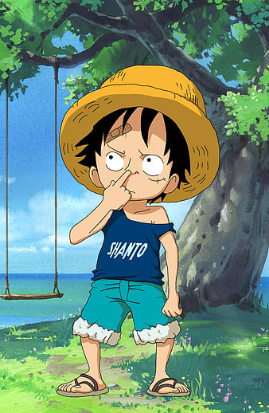
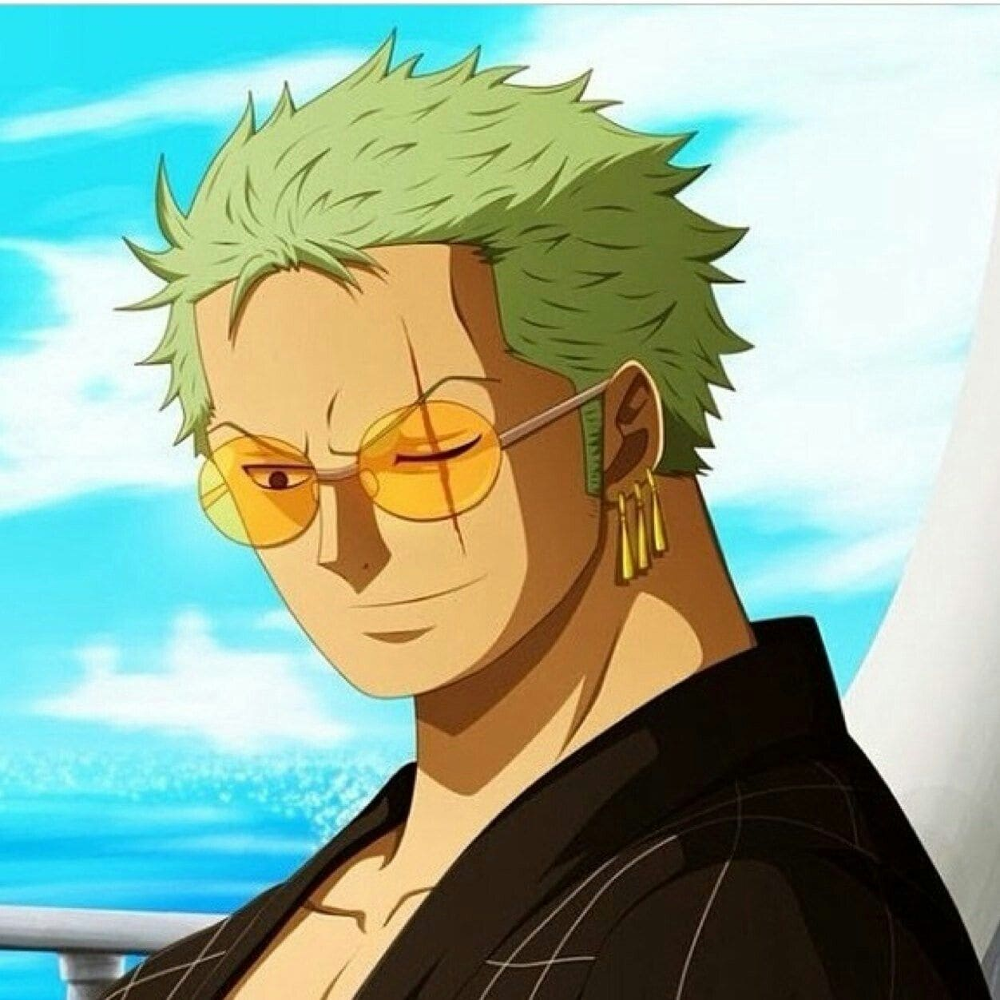

Luffy's most dominant traits are his apparent lack of common sense, his utter fearlessness and unwavering belief in himself. He generally marches at the beat of his own drum, unwilling to approach anything in a delicate or nuanced matter. That said, Luffy has a penchant of being able to see through the heart of the matter, often able to accurately call out someone's personal flaws such as Koby's cowardly nature or Kuro's weakness as a pirate. He is profoundly ambitious, frequently declaring he will become the Pirate King and devoting his entire being into being one. Luffy's personality can be described as childlike, in the sense that he tends to go to the extremes. He can either be extremely greedy, especially in cases of food, who his crew is, and adventure; or extraordinarily selfless, going so far as to virtually sacrifice himself to avenge or protect his friends, crew, and family. This childish mentality does not prevent him from often getting to the root of the problem and allowing him to figure out the simplest way of solving it. Above all else, Luffy dislikes weak people, though not strictly in a physical sense. He has openly told Koby that he "hates people like him" due to Koby's frequent use of phrases of "it's impossible" and his cowardly nature. Conversely, he likes people who put in the effort to make something of themselves, despite their limitations, and has come to appreciate Koby after seeing him put his life on the line. "Kaizoku ou ni orewa naru !""I will be the king of the pirates!"- Monkey D. Luffy. "I'm going to become king of the pirates. If I have to die fighting for it, then I die." 
Roronoa Zoro also known as "Pirate Hunter" Zoro is a main combatant of the Straw Hat Pirates, one of their two swordsmen, one of the Senior Officers of the Straw Hat Grand Fleet,and is publicly recognized as the right-hand man of his crew's captain Monkey D. Luffy. Formerly a bounty hunter,[6] he is the second member of Luffy's crew and the first to join it, doing so in the Romance Dawn Arc. Born in the East Blue, Zoro is the son of Tera and Roronoa Arashi, the grandson of Shimotsuki Furiko and Roronoa Pinzoro, and the grandnephew of Shimotsuki Ushimaru, making him a descendant of both the Shimotsuki Family of Wano Country and the legendary samurai, Shimotsuki Ryuma. As a master of Three Sword Style, a swordsmanship style which he created during his childhood training in Shimotsuki Village, Zoro is one of the three most powerful combatants of the Straw Hats, alongside Luffy and Sanji, who are referred to as the "Monster Trio".His dream is to become the greatest swordsman in the world, in order to honor a promise he made to his deceased childhood friend and distant cousin Kuina. In addition to his infamy as one of the Straw Hats and as a former bounty hunter, his sizeable bounty upon arriving at the Sabaody Archipelago caused Zoro, along with Luffy to be included among the eleven "Super Rookies", pirates who simultaneously reached the Red Line with bounties of over Beli100,000,000 shortly before the Summit War. He, the other ten Super Rookies, and Marshall D. Teach would go on to be referred to as the "Worst Generation." 